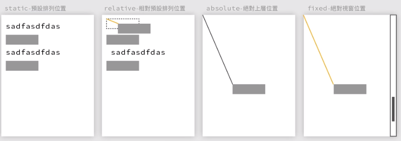

一、在HTML中套用CSS的優先權，依照層疊高至低
1. 標示為重要
於CSS中，使用「!important」，p { color: red !important ; }
2. 行內樣式
標籤中加上 「style="ooooo"」，
可以套用兩個以上的樣式，用空格區分，後面的樣式如果跟前面重複，則後面的優先權較高。
3. ID
於標籤加上ID，並套用 「#ooo{...}」， #aaa { color: red; }
同一個網頁中id不能重複使用。
4. 類別/ 屬性/ 擬類別 (class)
於標籤加上class，並套用 「.ooo{...}」 ， .bbb { color: red; }
5. 元素/ 擬元素
預設的HTML元素， p { color: red; }
6. 繼承的規則
找不到上述任何樣式，則自動繼承父元素的規則。
div跟div之間，如果有斷行，則顯示出來兩個區塊中間會有間隙
項目符號清單< ul >，子項目為< li >
數字序號清單< ol >，子項目為< li >
超連結
1. 視窗開啟方式：target，_blank為另開視窗
2. a標籤，除可設定網址外，也可以直接指定div的id，具有網頁錨點效果
圖片

CSS範例：元件排列與距離
標題文字h1~h6
CSS範例：內外間距
SASS範例：從屬關係與HOVER
SASS範例：使用變數$
SASS範例：變數@mixin 基礎
SASS範例：變數模組@mixin 與預設值應用
CSS範例：偽元素 ::before與::after
CSS範例：
1. attr，過濾HTML內容，HTML中的div有符合oooo=xxx者，都套用此樣式：div[oooo=xxx]
2. 根據HTML內容替換CSS內容，CSS中寫「attr=(ooo)」，表示自動於HTML偵測"ooo=xxx"，在CSS中等於「xxx」